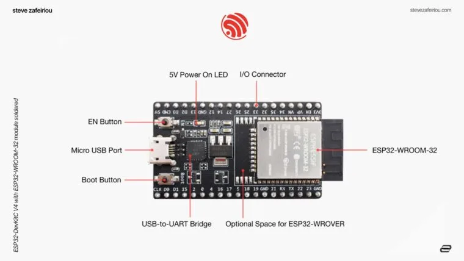
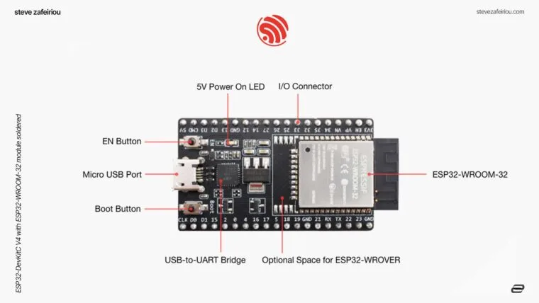

D L D i n R e a l L i f e

Microcontrollers — The Brain of Projects
Arduino
- Beginner-friendly
- Learning & prototyping
- Large community support
ESP32
- Built-in Wi‑Fi & Bluetooth
- Used in IoT projects
- More powerful than Arduino
 

MajorComponents
- L298N Motor Driver
- IR Sensor
- Servo Motor
- Bluetooth Module
- Temperature Sensor
- LCD Display

Join Our Community
Stay connected. Learn together. Build smarter projects.

DLD & ELE SOCIETY
Join our society to stay updated on Digital Logic Design, Electronics projects, workshops, and student activities.
Regular workshops & seminars
Hands-on projects & guidance
Community support & networking
Scan to Join WhatsApp
Get announcements and updates